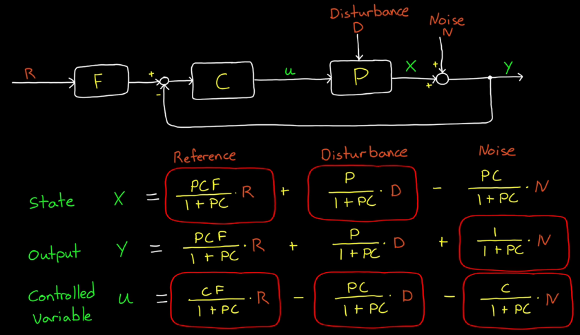
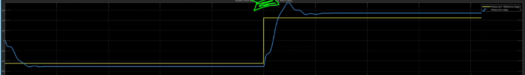

Linear Parameter Varying system (LPV):
The parameters of the plant's transfer function change in operation.
For example, the pitch control of an aircraft.
The transfer funtion of [pitch angle/ elevator angle] changes as the flying condition changes.
So, the linear controller that works so well in a single operating condition probably won't work at other conditions.
Gain Scheduling: change gain of the linear controller
Implementation
- Linearize plant at each design operating condition
- Tune gains at each design point, (performance is only gaurantee at the design condition)
- Choose the scheduling architecture, (transient-free switch)
- Assess the control performance, often doen in simulation environment, all critical transitions and corner cases should be covered
Feedforward Control:
can be used to remove a lot of the setpoint and disturbance error before it ever gets to the controller.
Only noise error is left.
Set the bandwidth to ignore the noise.
How can feedforward control remove setpoint error?
If you know the setpoint is going to change, why let it create error in the system first,
and then have that feedback controller respond and generate the necessary controller output second.
Why not predict, ahead of time, what controller output is required based on your knowledge of the setpoint change.
What are the information needed to accomplish this?
Since R(s) = Y(s) = u(s)*G(s)
u(s) = R(s)/G(s) = R(s)*G-1(s),
where R(s) is the setpoint; G-1(s) is the required feedforward controller.
If we had a perfect model, which is invertible,
then we can adjust our controller output with our feedforward term. G-1(s)
However, G-1(s) may not be perfect; or G-1(s) may not be possible.

G-1(s) is impossible for the example of system with delay.
Which means to "predict" the change of the setpoint.
So rather than invert the dynamic exactly, we usually try to "fit" a causal and realizable model to G-1(s).
It is therefore impossible to completely remove the setpoint error
Example MATLAB Command: openExample('control/heatexdemo')
Non-Minimum Phase System:
We can create transfer function with same bode Magnitute, but different bode phase.
For example: G(s) = (s+2)/(s^2+3s+1)
- adding delay, G_delay(s) = exp(-1s)*G(s)
- move LHP zero to RHP: G_RHP_zero(s) = (-s+2)/(s^2+3s+1)
For this given magnitude response,
Minimum Phase: G(s)
Non-minimum Phase: G_delay(s), G_RHP_zero(s)
To see the step response of these three systems,
Real systems with RHP zeros:
- Airplane pitch, as the elevator deflects up, the airplane needs to first move downward, and then the pitch angle is increased.
- Controller of the Inverted Pendulum (openExample('control/InvertedPendulumExample')
To move the inverted pendulum car rightward to a place, the car needs to move leftward first.
Why does a RHP zero cause this behavior?
By breaking the G(s) into 2 parts: (s+2) and 1/(s^2+3s+1)
the numerator part modifies the input u(t) by: 2 times the input signal, then "adding" the derivative.
So, if there are RHP zero, the first part becomes (-s+2).
Then the numerator part modifies the input u(t) by: 2 times the input signal, then "subtracting" the derivative.
Why is it harder to control RHP zero systems?
- Moving in the wrong direction first slows down the response
- Increasing the controller gain (to increase the response) can make it unstable!
(e.g. Airplane pitch example. Let's say we want the plane to move upward, so we deflects the elevator angle up.
As soon as the elevator deflects up, the altitude drops.
The high response controller recognize the altitude drop, commanding more deflect angle of the elevator, which brings the airplane down further.
Eventually the airplane altitude drops, with a high pitch angle, UNSTABLE!)
What can we do about this? lower controller gain to maintain stability
4 Ways to Implement Transfer Function In Code
The accuracy of our code depends on
- sample time
- Integration and differentiation methods
Method 1: Numerically solve the differential equations
For example,
G(s) = Y(s)/U(s) = (s+2)/(s^2+s+2)
(s^2+s+2)Y(s) = (s+2)U(s)
y_2dot(t) + y_dot(t) + 2y(t) = u_dot(t) + 2u(t)
y_2dot(t) = u_dot(t) + 2u(t) - y_dot(t) - 2y(t)
Basic Idea:
1st time step:
initial conditions[ud, y, yd = 0, u = input]
ydd = ud + 2u - yd -y
2cd time step:
yd = integral(ydd)
y = integral(yd)
u = input
ud = derivative(u)
ydd = ud + 2u -yd -y
Method 2: convert to a state space model (only integrate the state vector once)
s-domain(transfer function) to time-domain(state space)
covert by MATLAB: G(s), sys == ss(G)
State equation: X_dot(t) = [A]X(t) + [B]u(t)
Output equation:y(t) = [C]X(t) + [D]u(t)
Basic idea:
1st time step:
X(0) = [0], u = input
X_dot = [A]X0 + [B]u
y = [C]X0 + [D]u
2cd time step:
X = integral(X_dot)
u = input
X_dot = [A]X + [B]u
y = [C]X +[D]u
Method 3: convert to z-domain, discretize the transfer function
MATLAB: Gz = c2d(G, ts, 'tustin'); Gz.variable='z^-1'
(tustin is the discretize method which similar to trapazoidal integral 2nd order)
Then take inverse Z-transform to get the discrete time-domain equation. (easly done by hand)
Don't need to code any integral, since it is already taken care in the Z-transform process
Method 4: Autocode from MATLAB/Simulink
If you have a controller or a filter that you designed as a continuous function and you want to build C code or other code that is going to run on some other target hardware, hopefully you find one of these four methods helpful.
Gang of Six Transfer Functions
For a Feedback control, need to look beyond the Y/R transfer funtion
To fully understand how a feedback system behaves, we actually need to look at four different transfer functions.
PC/1+PC, P/1+PC, C/1+PC, 1/1+PC, (PCF/1+PC, CF/1+PC, F for feedforward)
And if our system has a feedforward path, then this expands to six.

PC/1+PC: complementary sensitivity function
1/1+PC: sensitiviy function
C/1+PC: noise sensitiviy function
P/1+PC: disturbance sensitivity function
Quanser Motor-Pendulum Example
reference: rotoray arm angle (+/- 45 degree step signal, switch after 10 sec)
y: rotoray arm angle
u: commanded motor input voltage
disturbance: free rotating pendulum attached on rotoray arm
(the pendulum oscillates at nearly a fixed frequency, it's natural frequency, and that oscillation causes a disturbance on rotary arm itself.)
1st run, C: PD contorller
We can see how the disturbance effects the system, large oscillations.
The reason the pendulum is oscillating is not because of some external force acting on it, but because our controller itself is driving the rotary arm at a frequency that is exciting the pendulum, or adding energy into that mode.
One way we may try to combat this is to add a notch filter in series with the controller. Basically, by doing this, we’re not letting the controller change the voltage at the natural frequency of the pendulum, which in our case is about 9.7 rad/s. If we don’t command the arm at this frequency, then we shouldn’t add any energy into the pendulum. Let’s try it out.
2cd run, C: notch filter(wn = pendulum natural frequency) * PD controller

The oscillation of the pendulum is reduced.
Overshoot occurs! because we've changed C, so the whole system stability is changed.
By retuning the gain, we're able to reduce the overshoot.
A New Problem of Adding Notch Filter:
The controller itself doesn’t add energy into the pendulum, great, but that also means it can’t remove energy.
If an "external force" causes the pendulum to oscillate, our controller won’t be able to damp out that motion.
Let's say an external force causes the pendulum to oscillate at its natural frequency.
The pendulum acts on the rotary arm, causing it to oscillate at the same frequency.
However, this "natural frequency" angle error is removed by the notch fileter.
So the controller doesn't see it; It doesn't react to it.
By moving the notch filter into the feedforward path,
We're removing the troublesome frequency from our "step command", but not impacting the whole feedback system.
(note: feedfoward path only shows up in the reference transfer function)
3rd run, C: PD control; F: Notch Filter
Step input changes to r*F, back and forth dance at the beginning.
(The reference steps very fast at the beginning to get the arm moving, then swings back to stop the motion of the pendulum, and then comes back again to keep the arm moving.
So, it’s this backward motion that is effectively keeping the pendulum from moving while still allowing the arm to step to the commanded angle.)
Pendulum oscillation is also reduced.
For this example, notch filter in the feedforward path can still respond to and reject "external" disturbances. Has better disturbance rejection.